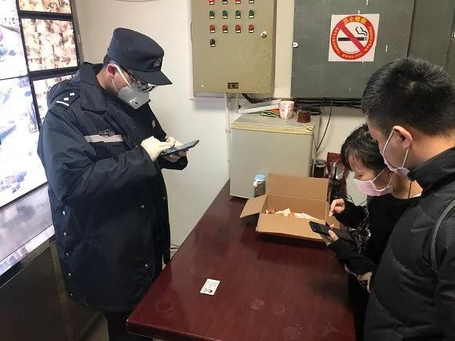

藏在后备箱里进上海，居然成真了！
原文链接 备份链接 澎湃新闻记者 朱奕奕 此前，网上流传有多张照片，称上海查获多起人员藏匿于轿车后备箱以及有人跨越高速公路护栏进入上海金山的情况。经上海警方查证，相关信息不实，本市公安机关在工作中未发现相关情况。（相关报道：藏后备箱进上 …
澎湃新闻记者 朱奕奕
疫情防控期间，上海不少居民小区先后采取了暂时封闭管理措施，并为常住居民办起了出入证。
近日，一女子嫌登记办理出入证麻烦，竟不走寻常路，藏身汽车后备厢企图蒙混过关，被小区门口值守的民警和防疫工作人员当场查获。

该女子被查获。 本文均为普陀警方供图
澎湃新闻记者从上海普陀警方处获悉，2月15日14时25分许，一名热心群众向正在真建花苑小区门口值守的防疫工作人员反映，他在小区外围看见有一女子钻入了一辆小轿车的后备厢，这辆车正往小区方向行驶。
1分钟后，这辆车果然来到了小区门口，民警和现场工作人员当即要求驾驶员打开轿车后备厢，果然有一年轻女子藏匿其中。民警将这名女子和驾驶员传唤至派出所作询问调查。

女子和男友接受警方教育。
经调查，这名女子姓杜，是轿车驾驶员女友，春节期间暂时借宿在男友住处。因嫌麻烦一直没有办理小区出入证，所以藏匿在已办出入证的男友轿车后备厢内，准备“偷渡”回小区。经检测，杜某体温正常，民警也核实了其近2个月未离开过上海。
在民警教育下，杜某认识到了自己的错误，并表示十分后悔。后经民警帮助，杜某顺利办理了出入手续，正常进入小区。

女子签下承诺书。
此前报道
而就在此前的2月11日，上海市公安局松江分局民警在G60高速公路公安检查站执行查控任务时，就曾于一辆轿车的后备厢内查获一名来自重点地区的女子。
经调查，该女子长期在上海工作，1月22日其从上海回在重点地区的老家过年。2月11日清晨，她搭乘朋友的轿车回沪，由于听闻上海在各高速公路道口实施了非常严格的查控措施，为避免返沪后被隔离观察14天，所以藏匿在轿车后备厢内，企图蒙混过关。

此前报道《藏在后备厢里进上海，居然成真了！》，戳图可查看详细内容
网友评论
LinLi：无语了
老默：我应该在车底，不应该在车里
小黎黎：特殊时期，尽量别添乱呀！
午夜阳光：应该严肃处理！而且，奉劝大家不要效仿！！！
张江河：这不是没事找事吗
Lesley_：人类迷惑行为大赏
美国队长：工作人员辛苦了
阿华田豆奶！：现在在是关键时期，真的希望每个人都能有点责任心
真水无香：一场瘟疫各种妖魔鬼怪都显灵了
行者.路况信息员：不学好，尽学坏
戳这里进入
“全国新型冠状病毒感染病例实时地图”↓↓↓

本期编辑 周玉华
推荐阅读


原文链接 备份链接 澎湃新闻记者 朱奕奕 此前，网上流传有多张照片，称上海查获多起人员藏匿于轿车后备箱以及有人跨越高速公路护栏进入上海金山的情况。经上海警方查证，相关信息不实，本市公安机关在工作中未发现相关情况。（相关报道：藏后备箱进上 …
原文链接 备份链接 要是说有什么神奇的地方，就是封城二十天后，大家还没有失去幽默感。印象里，幽默应该第一批在疫区消失的情绪。愤怒和绝望的风暴后，幽默顽强地翻过身，重新站在平起平坐的地位。闷在家中催生的段子，塑料袋和水瓶拼凑的出行防护，地方 …
原文链接 备份链接 经济观察网记者 刘晓林 郭有信 2月13日下午，刘女士手机收到一条来自12306的短信，告知其购买的2月27日信阳回北京的高铁停运，提醒其及时退票。这是刘女士作为备选的返程车票，她庆幸还有机票可用。但第二天中午，她最担 …
原文链接 备份链接 记者：傅林林 “ 小区物业管理受到最严峻考验。 ” 2020年的春节因为疫情而显得格外特殊，足不出户和口罩成了标配，抖音里到处都是在家里旅游的段子。但对于各个社区来说，物业从业者却要比任何时候都繁忙。 随着疫情的扩散， …
原文链接 备份链接 *这篇不知道又触及什么内容，一直无法查看，自我阉割。 今天武汉大雪纷飞，北风乱吹，正儿八经的下雪，不是忽悠人的小雪粒，我不爱玩雪，看着只觉得冷，倒怀念昨天快20度的好天气。 早上还是雨珠，到中午就开始飘雪，鹅毛大雪，作 …